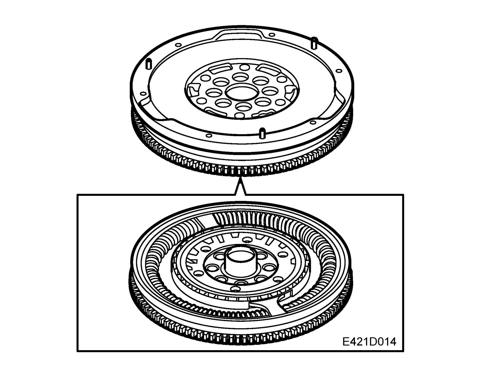

Flywheel: Description and Operation
Dual-mass flywheel
A modern, high output engine with low weight has a reduced ability to dampen vibrations. Some models have a dual mass flywheel to decrease noise and increase travel comfort.
The combustion process in reciprocating engines causes torsional vibration in the crankshaft and therefore also the flywheel. This torsional vibration is conveyed to the transmission and via engine mountings also to the subframe and the body. Combustion, especially at low engine speeds, causes varying torque on the crankshaft and flywheel. This means that gears that are not in mesh will start to vibrate and gearbox clatter will easily arise at idling speed, under high loads and during engine braking at low engine speeds. The solution to this problem is a dual-mass flywheel comprising two separate masses, a primary and a secondary, with a spring damping system connecting the two. This almost completely eliminates torsional vibration in gearbox and transmission. This means that the whole transmission chain is able to run more smoothly without causing clatter in gears not in mesh. Vibration in the body conveyed via the engine mountings is greatly reduced.
This design improves shifting comfort and reduces gearbox wear. Fuel consumption is also reduced thanks to being able to drive at lower engine speeds.
The primary mass in the dual-mass flywheel is mounted on the engine (crankshaft) and the secondary on the transmission side. They are flexibly linked with a spring assembly that absorbs torsional vibration from the engine.
High torsional vibration occurs above all in conjunction with load transitions in the lower engine speed range, when driving at very low engine speeds with high torque output and when the engine is started and stopped. These peaks in torque are absorbed by the bow-shaped springs. At high engine speeds, the springs are pressed out against the spring housing so that their spring action becomes limited. At high engine speeds on the other hand, the variation in torque are so small that the influence of the action of the outer springs is reduced. The spring normally mounted in the driven plate hub are not present in engines with dual-mass flywheels as the flywheel itself has taken on the task of these springs. A pulley with vibration damper is mounted on the belt circuit side of the crankshaft so that the torsional vibration does not spread to components driven by the belt.